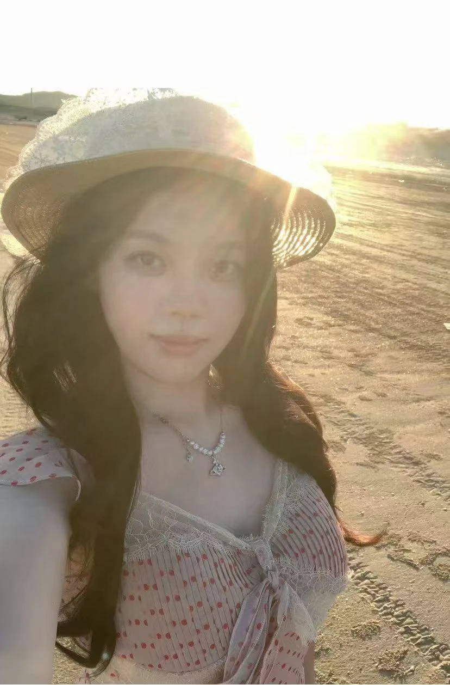

THE PERSONAL EXHIBITION OF TANG YI生活与创作 · 持续展出中

01 — ABOUT ME关于我
世界很大，
我的好奇心也是。
我想，我是一个对世界充满好奇的人。
喜欢旅行和美食，喜欢小猫，也喜欢一切新鲜有趣的事物。我的 MBTI 是 ISTJ，但生活里的快乐，常常来自一个新发现和一次小小的尝试。
在我的自我介绍里，最想留下两个词：探索欲与创造力。弹钢琴、画画、尝试美声，或者安静地做一件手工——它们都是我认识世界、表达自己的方式。
Tang Yi保持好奇，也保持热爱。
01 / CURIOSITY
探索欲
世界像一本永远翻不完的书，
每一页都可能遇见新的风景。
02 / CREATIVITY
创造力
把一闪而过的灵感留下来，
用自己的方式创造一点美。
02 — SELECTED CREATIONS小小作品展
把喜欢，
做成看得见的东西。
从一颗拼豆，到一块染布。
这些是我留在日常里的创作痕迹。
点击作品，细看一点 ↗
NO. 01 / BEAD ART
拼豆 · 兴趣与表达一面小小的灵感墙
NO. 02 / EVERYDAY OBJECTS
拼豆 · 日常里的小趣味把美食贴在冰箱上
NO. 03 / TIE-DYE
扎染 · 影片片段蓝色，自由地生长
NO. 04 / PAPER & PRINT
剪纸与版画 · 影片片段纸上的红与黄
NO. 05 / LITTLE THINGS
手工饰品 · 影片片段让细碎的美好停留
作品，是另一种自我介绍。ALWAYS EXPLORING. ALWAYS MAKING.
03 — THE SOFTER SIDE生活的柔软一面
还有，
我的小猫。
超级、无敌、可爱。
喜欢旅行时遇见的风景，
也喜欢回到家就能遇见的小小陪伴。
04 — A SHORT FILM75 秒，走近我一点
一些生活。
一些正在成为的我。
旅行、音乐、绘画与手作。
用一段小小的影像，把我介绍给你。
SELF-PORTRAIT IN MOTION
“也愿意用自己的方式创造美好。”
FILM BY TANG YI05 — SAY HELLO展览还没结束，故事可以继续